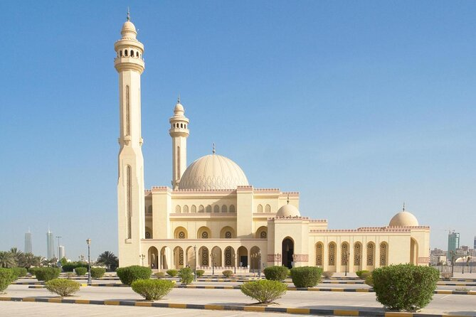
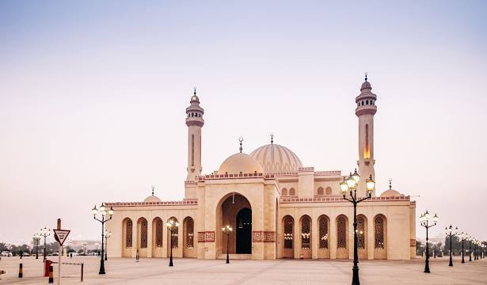
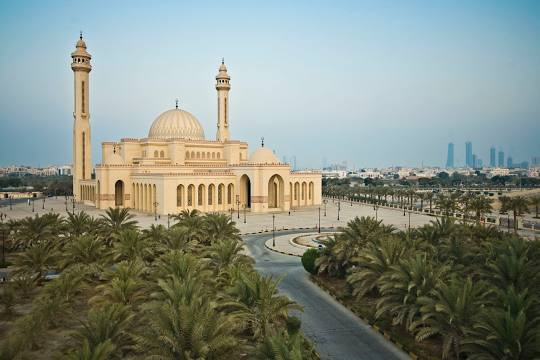
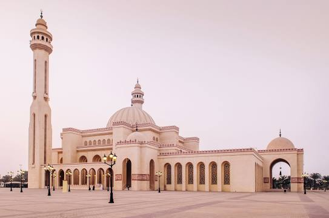

The Al-Fateh Mosque is one of the largest mosques in the world, encompassing 6,500 square meters and having the capacity to accommodate over 7,000 worshippers at a time. The mosque was built by the late Sheikh Isa bin Salman Al Khalifa in 1987 and was named after Ahmed Al Fateh. In 2006, Al-Fateh became the site of the National Library of Bahrain. Wikipedia
 